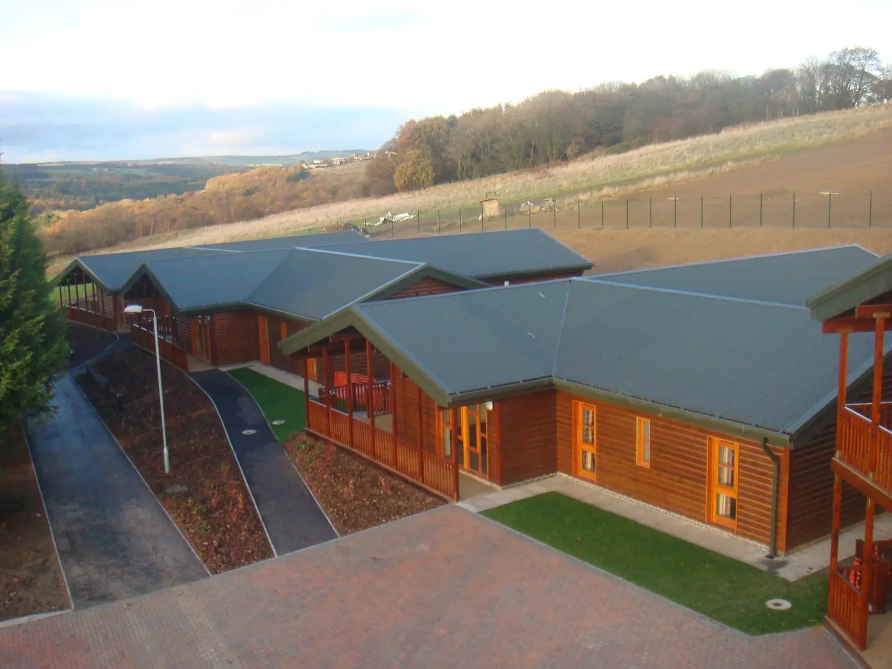

About the Youth Ministry Team
The Diocese of Hexham and Newcastle's service for young people, based at the Emmaus Youth Village near Consett.
Our mission
We aim to encourage young people into a relationship with Christ and fully into the life of the Church.
Like Christ on the road to Emmaus, we walk alongside young people across the North East: in schools, in parishes, on pilgrimage and at the Emmaus Youth Village.
What we do
- School retreats
Residential retreats for primary and secondary schools.
More - The Festival
Behold, for Year 6 and secondary schools, every summer.
More - The Source
Praise, worship and adoration across the diocese.
More - Lourdes
Youth helpers on the diocesan pilgrimage.
More - Youth Council
Young people helping to shape YMT.
More - The Internship
A year in community, ages 18–30.
More - The Emmaus Youth Village
Group stays in the Derwent Valley.
More
Safeguarding
Our team is trained and DBS-checked, and follows the safeguarding policies of the Catholic Church in England and Wales and the Diocese of Hexham and Newcastle.